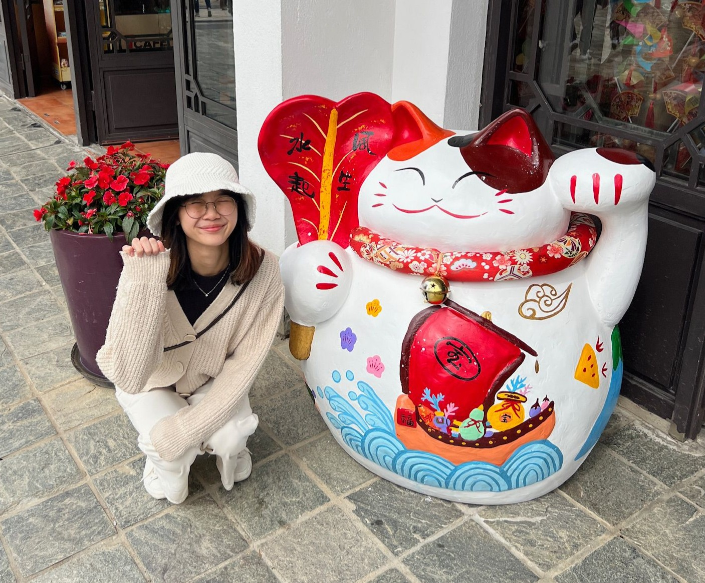
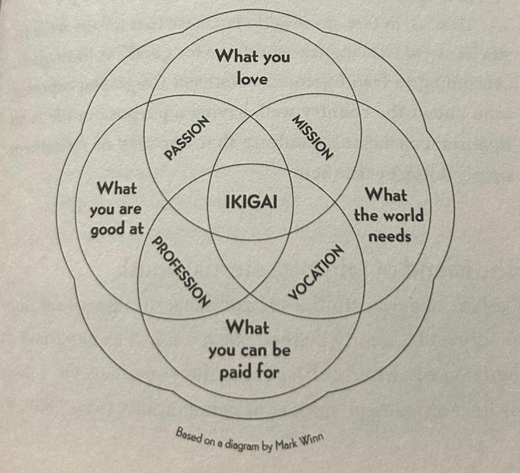
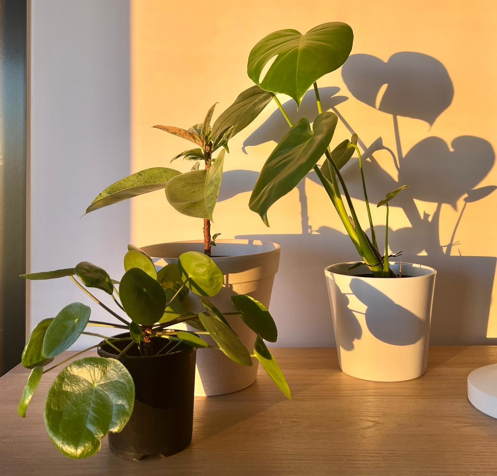

I recently graduated on 25 July 2025 from the University of Melbourne with a Bachelor of Commerce (Finance). Before that, I completed my first year at HELP University in Malaysia.
I’m grateful to have experienced two different learning environments and a mix of teaching styles. With this degree, I feel ready to step into the real world — to keep learning, build practical skills, and find where I truly thrive.
I know I’m not at 100% yet (who is, really?), but I’m eager to take that first step and learn fast. Through internships, I’ve worked across healthcare, finance, and tech — and I genuinely enjoyed every one of them. Each role gave me something new, whether through projects, mentors, or colleagues who eventually became friends.
Some ex-colleagues-turned-mentors I still remember fondly: Silas, Hazel, Soon Shuen, Wei Lik, Greg... the list goes on. I met each of them through short-term projects or spontaneous chats — but what they all had in common was that they never discouraged questions. They welcomed curiosity, and they encouraged exploration.
I once asked a colleague from the tech team what it was like to be a business analyst. She was surprised — not just by the question, but by why I was even asking. After all, I had no background in it and wasn’t even in her department. But I wasn’t trying to apply for the role — I just wanted to know what it actually felt like, beyond what a job description says. Real insights, from a real person.
Sure, I know that one person’s answer doesn’t represent the entire role — every company and team does things differently. But it still matters. Because I believe that when you’re curious about people, you learn about possibilities.
I recently read a book called Ikigai by Hector Garcia and Francesc Miralles — it talks about how curiosity can lead you to your purpose, your reason for being. That really resonated with me. If we’re going to spend so much of life working, we might as well find it interesting.

My takeaway? Stay resilient and don’t get comfortable too early. Keep exploring new fields, talk to more people, and paint my life with different experiences. Somewhere in the middle of all that, I believe I’ll find my own Ikigai.
I’ve been surrounded by music since I was three — starting with the piano. Not in a competitive sense, but more in a playful, creative way. At 13, I picked up the violin and joined my high school band, where we played everything from film scores to musical theatre classics. (bits of My Chemical Romance to Hamilton the Musical)
Even during lockdown, our ensemble stayed connected. Just before everything shut down, we managed to record and release a performance together.
These days, I also dabble in guitar and ukulele. I love how music brings people together — nothing beats the feeling of playing music with others. One day, I hope to form a little duet or band... maybe even try busking on the streets of Melbourne (we’ll see!).
I won’t pretend to be a master chef, but I do have a curious palate. I’ve tackled some pretty specific (and ambitious) dishes — like sambal matah and roti canai. Definitely not your beginner recipes! (some failed miserably..while my Nyonya layer cake did prove success)
As an international student in Melbourne, I slowly fell in love with cooking. Cooking often transports me to a whole new realm of concentration and it's just so therapeutic tasting the food as it continues to develop its aroma and flavour. But before all that? I was completely lost in the kitchen. Don’t even ask me how to cook a chicken — I had no idea. But now? I can proudly make scrambled and sunny side up eggs like a pro. Small wins count!
When I moved into a place with a balcony, I finally had space to start my plant journey. These days, I proudly care for:

I check their leaves for stress every day, water them gently (but not too much!), and beam with pride every time a new leaf appears. I often talk to them as well, encouraging them to grow well and showering them with positivity. Mon Mon in particular, is growing at a very fast pace, showing signs of a new leaf. Wish me luck!
I still have so much more to share — and I’d love to know your story too!
If anything here resonates, feel free to reach out via my
LinkedIn
or
Email.
May you find your Ikigai too.